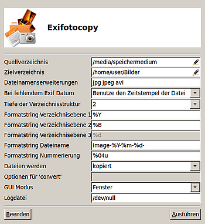

exifotocopy
Dieser Artikel wurde für die folgenden Ubuntu-Versionen getestet:
Ubuntu 17.10 Artful Aardvark
Ubuntu 16.04 Xenial Xerus
Ubuntu 14.04 Trusty Tahr
Zum Verständnis dieses Artikels sind folgende Seiten hilfreich:
ExiFotoCopy  ist eine Erweiterung für den Dateimanager Nautilus und erscheint als Nautilus-Skript im Kontextmenü
ist eine Erweiterung für den Dateimanager Nautilus und erscheint als Nautilus-Skript im Kontextmenü  . ExiFotoCopy wurde entwickelt, um Bilder/Fotos von einem externen Datenträger (MMC/SD) oder einer Digitalkamera auf ein anderes Speichermedium zu kopieren, zu skalieren und nach den Exif-Informationen (z.B. Aufnahmedatum) in eine Ordnerstruktur einzusortieren. Es handelt sich um eine Weiterentwicklung des Skripts photocopy.
. ExiFotoCopy wurde entwickelt, um Bilder/Fotos von einem externen Datenträger (MMC/SD) oder einer Digitalkamera auf ein anderes Speichermedium zu kopieren, zu skalieren und nach den Exif-Informationen (z.B. Aufnahmedatum) in eine Ordnerstruktur einzusortieren. Es handelt sich um eine Weiterentwicklung des Skripts photocopy.
So werden die Bilder/Fotos automatisch nach Aufnahmedatum/Zeit in Unterverzeichnisse sortiert. Sind keine Exif-Information vorhanden, erfolgt eine Datumsabfrage mit der Möglichkeit zur manuellen Eingabe. Das Skript bietet eine Fortschrittsanzeige und weitreichende Konfigurationsmöglichkeiten über eine grafische Oberfläche (PyGTK) sowie interaktive Rückmeldungen über GNOME-Benachrichtigungen. Das Skript wurde von hannenz unter der GPL-Lizenz nach einer Spezifikation von scuba geschrieben.
Installation¶
Vor der Nutzung müssen folgende Pakete installiert [1] werden:
jhead (für das Auslesen der EXIF-Informationen aus den Bildern/Fotos)
zenity (optional, für die Benutzer-Interaktion z.B. Fortschrittsanzeige)
nautilus-script-manager (optional, für die einfache Ausführung mittels Rechtsklick)
imagemagick (optional, um die Größe der Bilddateien anzupassen)
 mit apturl
mit apturl
Paketliste zum Kopieren:
sudo apt-get install jhead zenity nautilus-script-manager imagemagick
sudo aptitude install jhead zenity nautilus-script-manager imagemagick
Hinweis:
Wenn Zenity nicht installiert ist und das Skript über Nautilus (ohne aktives Terminal) aufgerufen wird, erfolgt keine sichtbare Interaktion. Das Skript läuft im Hintergrund und wartet auf eine Eingabe.
Das Skript selbst kann als Archiv von gnome-look.org  heruntergeladen werden.
heruntergeladen werden.
Hinweis!
Fremdsoftware kann das System gefährden.
Das Archiv exifotocopy-x.y.tar.gz in ein beliebiges Verzeichnis entpacken [2]. Aufgrund von Änderungen in Nautilus muss die Datei install.sh vor der Installation erst angepasst werden. Dazu ändert man in einem Editor[3] die folgende Zeile:
NAUT="${HOME}/.gnome2/nautilus-scripts"in
NAUT="${HOME}/.local/share/nautilus/scripts"Nach dem Wechsel in dieses Verzeichnis wird das Skript mit dem folgenden Befehl [4] installiert:
./install.sh
Das eigentliche Skript sowie das Konfigurationswerkzeug werden nach ~/bin installiert (das Verzeichnis wird neu angelegt, falls es noch nicht existiert). Falls noch nicht geschehen, kann man dieses Verzeichnis dem "PATH" hinzufügen, damit man das Skript von überall aus aufrufen kann. Obwohl sich das Skript als Nautilus-Skript eher an Nutzer von grafischen Oberflächen richtet, lässt es sich auch problemlos auf Terminal-Ebene benutzen und konfigurieren.
Deinstallieren¶
In das Verzeichnis wechseln, mit dem Befehl
./install.sh uninstall
wird das Skript restlos entfernt.
Konfiguration¶
Das Skript wird über eine grafische Konfigurations-Oberfläche konfiguriert. Der Konfigurator wird mit der rechten Maustaste im Kontextmenü im Menü "Skripte" mit dem Eintrag "ExiFotoCopy" ausgeführt, wenn eine Bilddatei ausgewählt ist. Die Konfigurations-Datei exifotoconfig befindet sich im ~/bin/-Verzeichnis. Der Konfigurator wird mit dem Befehl
~/bin/exifotocopy/exifotoconfig
aufgerufen. 
Alle Parameter und Variablen werden per Tooltip angezeigt, wenn die Maus über dem entsprechenden Feld bewegt wird. Das Skript ist lokalisiert und wurde bereits ins Deutsche und Englische übersetzt. Die Konfigurations-Datei exifotocopyrc liegt im Verzeichnis ~/.exifotocopy und kann selbstverständlich auch mit einem Editor [5] manuell bearbeitet werden.
| Variablen | |||
| Beschreibung | Erklärung | Beispiel | |
| Quellverzeichnis | Durchsucht Quellmedien nach dem Quellverzeichnis | Quellverzeichnissuche über Nautilus | |
| Zielverzeichnis | Durchsucht Zielmedium nach dem Zielverzeichnis | Zielverzeichnissuche über Nautilus | |
| Dateierweiterung | Dateierweiterung der Dateien auf dem Quelldatenträger wonach ExiFotoCopy suchen soll | jpg, jpeg, avi, bzw. JPG, JPEG, AVI | |
| Bei fehlendem Exif Datum | Funktion bei fehlendem Exif Datum | Datumseingabe über Kalender-Funktion (Fortlaufende Nummerierung empfohlen) | |
| Tiefe der Verzeichnisstruktur | Definition der Verzeichnistiefe | 1, 2, 3 -fache Tiefe | |
| Formatstring Verzeichnisebene1 | Parameter für die Benennung der ersten Verzeichnisebene | "%Y" bei mehrfachen Ebenen oder "%Y-%m-%d" bei nur 1 Ebene siehe auch die Manpage für "date" | |
| Formatstring Verzeichnisebene2 | Parameter für die Benennung der zweiten Verzeichnisebene | "%B" für "Januar" oder "%m" für "01" nur 2. Ebene | |
| Formatstring Verzeichnisebene3 | Parameter für die Benennung der dritten Verzeichnisebene | "%d" für "12" nur 3. Ebene | |
| Formatstring Dateiname | Parameter für die Benennung der Bilder/Foto- Dateien | "%Y_%m_%d-####" oder "%Y_%m_%d--%H.%M.%S" | |
| Formatstring Nummerierung | Parameter für die fortlaufende Nummerierung | "%04u" fortlaufende vierstellige Nummerierung | |
| Dateierweiterung | Erweiterung der Dateien im Zielverzeichnis | JPG, jpg, jpeg, PNG, png etc. (bei "convert" wird die Dateiart konvertiert) | |
| Dateien werden | Auszuführende Aktion | ""cp"" = kopieren, ""mv" = verschieben, "convert" = skalieren oder Dateiart z.B. png | |
| Option für Konvertierung | Skalierung der Bilder/Fotos mittels ImageMagick "convert" | "-resize 800x600, -resize 1024x768" bzw. "-convert, -crop, -dither, -despeckle" etc. siehe auch die Manpage für "convert" | |
| GUI Modus | Aktiviert die GNOME Benachrichtigung bzw. Zenity Interaktion mit eigener Anzeige | Benachrichtigung im eigenen Fenster oder Gnome-Benachrichtigung | |
| Logdatei | definiert den Speicherort für die Logdatei | "/dev/null" = Kein Logging | |
Für weitere Parameter zu "convert" siehe die Manpage für "convert", für weitere Parameter zum Datum siehe die Manpage für "date".
Nachdem alle Einstellungen vorgenommen wurden, wird der Skript mit der Schaltfläche "Ausführen" ausgeführt.
Funktion¶
Das Skript sucht im ersten Schritt nach allen Dateien in den angegebenen Verzeichnissen und Unterverzeichnissen mit den in der Konfiguration angegebenen Dateierweiterung ( *.jpg, *.jpeg, *.avi). Anschließend werden die Exif-Informationen mittels JHead aus den Dateien ausgelesen (bei .avi wird der Zeitstempel verwendet). Sollten die Exif-Informationen nicht ausgelesen werden können, erfolgt - je nach Einstellung - eine manuelle Datumsabfrage oder es wird der Zeitstempel der Datei verwendet. Mittels der so gewonnen Datumsinformationen werden die Zielordner in dreifacher Tiefe (1-3 Ebenen) angelegt. Abschließend werden die Dateien in das angelegte Verzeichnis hinein kopiert/verschoben, umbenannt und auf Wunsch mittels "convert" (siehe in der Manpage für "convert") skaliert oder konvertiert.
Hinweis:
Das Konvertieren von Videodateien (z.B. AVI) kann einige Zeit und Rechenleistung in Anspruch nehmen. Es wird empfohlen, Videodaten nur zu kopieren/verschieben und nicht zu konvertieren, oder im Feld "Dateierweiterung" der Quelldateien die Erweiterung AVI zu entfernen und Videodateien manuell von dem Quellmedium zu kopieren/verschieben.
Links¶
AmoK Exif Sorter - liefert ähnliche Funktionen, kann auch ITPC-Daten auslesen
Bilder verwalten
 Übersichtsartikel
Übersichtsartikel
- Erstellt mit Inyoka
-
 2004 – 2017 ubuntuusers.de • Einige Rechte vorbehalten
2004 – 2017 ubuntuusers.de • Einige Rechte vorbehalten
Lizenz • Kontakt • Datenschutz • Impressum • Serverstatus -
Serverhousing gespendet von